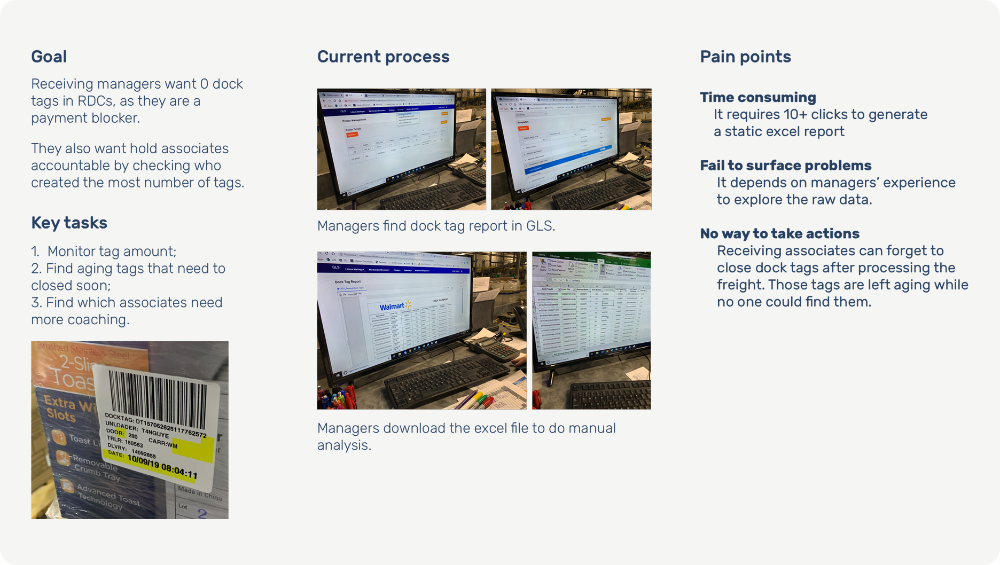
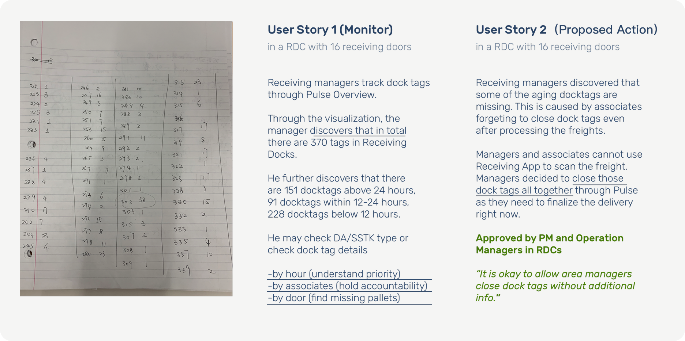
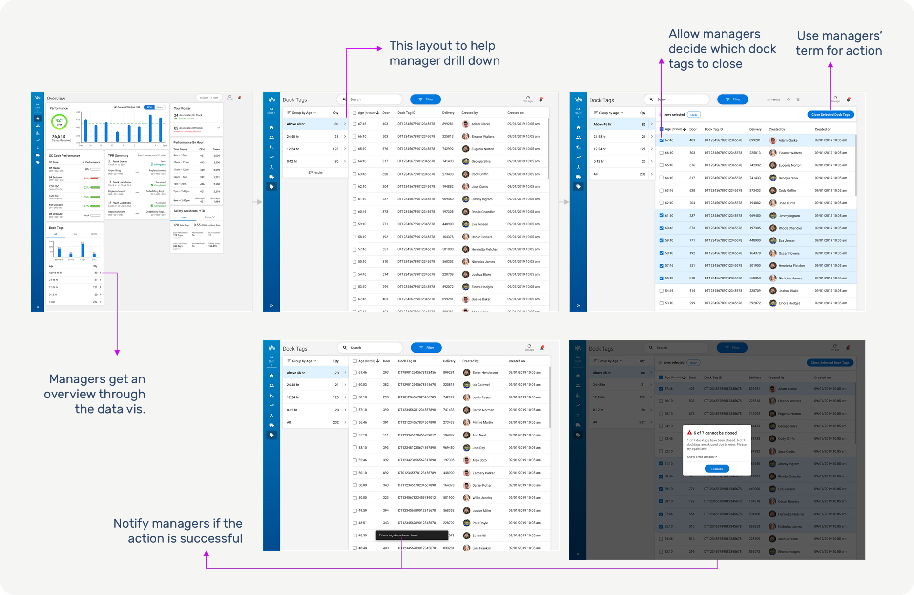
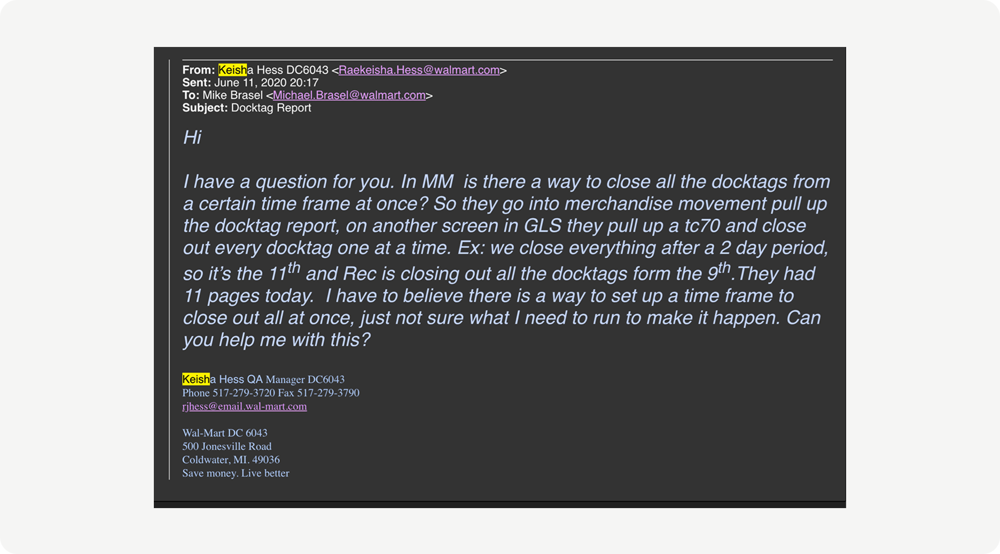

Dock Tag Design
Empowered frontline managers to accelerate billions in freight payments.
Girls Find Girls is an app for teenage girls, their parents or professional women to explore female presence across various industries. The app encourages female to make informed career choices and pursue what they are passionate about.

Product Request
The product manager asked me to design a feature for Pulse—a mobile and desktop application—that allows Receiving Managers to track dock tags by hour and type. To understand the context and the need for this feature, I persuaded my manager to let me conduct in-field user research. Leveraging internal networks, I visited DC 6094 and interviewed three Receiving Managers to learn how dock tags work and their purpose.
Generate User Stories
After analyzing the research data, I identified a hidden user need that was not captured in the product request but was critical for front-line managers and associates. To help define the scope, I created 'must-have' and 'nice-to-have' user stories.
Iteration on design
After analyzing the research data, I identified a hidden user need that was not captured in the product request but was critical for front-line managers and associates. To help define the scope, I created 'must-have' and 'nice-to-have' user stories.

Validate with real users
To validate the must-have and nice-to-have needs, I collaborated with my product manager to reach out to three additional Receiving Managers to review the prototype. Fortunately, the closing feature was very well received. As one of the most critical features, Receiving Managers appreciated the ability to make empirical decisions based on real-time situations. Without this feature, managers currently must conduct extensive research in the distribution centers to locate dock tags, train associates, and wait to process supplier payments after a locked period. This significantly slowed warehouse payments to vendors and added extra mental burden for managers.

Final Design
After two rounds of research and early prototyping, I updated the design with several core capabilities. In the data dashboard, receiving managers can quickly identify tags older than 48 hours that need immediate attention. They can drill down into details and sort tags by creator, enabling targeted troubleshooting or coaching. If a tag can no longer be resolved, managers can now close it directly in the platform—a unique capability that allows warehouses to respond to exceptions quickly. Since tags are linked to financial payments, this feature also improves warehouse financial health.
Get buy-in
As we began socializing the concept, we encountered strong pushback from the data warehouse team. At the time, docktag capabilities were limited to API retrieval, and enabling managers to track and close tags in real time would have taken over five months. During this challenging period, a user email underscored the urgency: managers needed the ability to close tags to accelerate vendor payments and protect warehouse financial health. This insight helped us secure leadership support to redesign the backend data structure, delivering this critical capability to all warehouse receiving managers.
Reflections from Yingxiao
This project is a personal passion, inspired by the experiences of women around me struggling to answer: ‘Is this industry a good fit for me?’ Drawing from career reports, friends’ stories, and my six years in B2B, I created a tool to help women explore career paths confidently. I realized data analytics—often seen as technical—can be a creative way to support informed career decisions. Receiving multiple industry awards was meaningful not just for my design work, but because it showed that this problem is being recognized by experts, and that I’ve contributed to advancing this space.
To discuss this case study with me, feel free to send an email to lunaatlgt@gmail.com